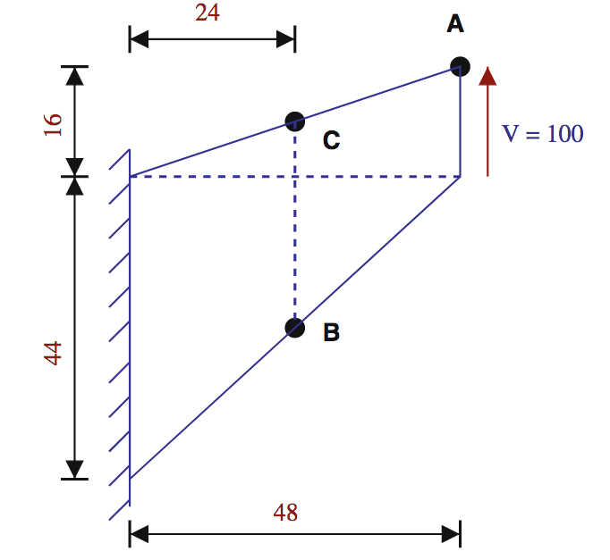

Volumetric Locking Correction
Volumetric locking is the over stiffening of elements when the material is close to being incompressible (Poisson's ratio nearing 0.5). This stiffening happens when a fully integrated element (such as Hex8 elements with 8 quadrature points or Quad4 elements with 4 quadrature points) is used. This is a numerical artifact introduced because shape functions used in finite element analysis cannot properly approximate the incompressibility condition throughout the element. To avoid this locking of elements, B-bar correction Hughes (1987) is implemented in MOOSE.
Theory
In this method, both the strain () and the virtual strain () in an element are separated into volumetric and deviatoric components. The volumetric component is then replaced with an element averaged volumetric strain. This ensures that the volumetric strain remains constant throughout the element.
For example, in the case of small strain linear elasticity, the equation of motion is: The element averaged volumetric strain (assuming small strain formulation) is: where is the volume of the element and tr(.) is the trace of the matrix.
The strain in each element is replaced by the approximation: where is the identity matrix. Similarly, the virtual strain is also approximated by: The modified equation of motion is: More details about this method can be found in Section 8.6 of Bower (2009).
When finite strain formulation is used, the volumetric component of the strain is separated using the determinant of the deformation matrix.
Usage
Volumetric locking correction is set to false by default in solid mechanics. When dealing with problems involving plasticity or incompressible materials, it can be turned on by setting volumetric_locking_correction=true in both the stress divergence kernel and the strain calculator or in the Solid Mechanics quasi-static physics.
When volumetric locking correction is turned on, using a SMP preconditioner with coupled displacement variables may help with convergence. For a 3-D problem with only displacement as unknown variables, the following pre-conditioner block may be used:
[Preconditioning<<<{"href": "../../syntax/Preconditioning/index.html"}>>>]
[./SMP]
type = SMP<<<{"description": "Single matrix preconditioner (SMP) builds a preconditioner using user defined off-diagonal parts of the Jacobian.", "href": "../../source/preconditioners/SingleMatrixPreconditioner.html"}>>>
full<<<{"description": "Set to true if you want the full set of couplings between variables simply for convenience so you don't have to set every off_diag_row and off_diag_column combination."}>>> = true
[../]
[]Verification of locking correction on Cook's membrane
A 2D trapezoidal membrane Figure 1 with Poisson's ratio of 0.4999 is fixed at the left edge and sheared at the right edge. Locking behavior of the membrane is observed with the use of first order (Quad4) elements with no volumetric locking correction. This locking results in much lower vertical displacement at Point A than that observed in other scenarios, see Figure 2 . Locking can be avoided with the use of Quad4 elements along with volumetric locking correction or with the use of second order elements (Quad8) with or without volumetric locking correction. These results match with that presented in Fig. 6 of Nakshatrala et al. (2008).

Figure 1: 2D problem to demonstrate volumetric locking.

Figure 2: Vertical displacement at Point A for different element types and mesh density. Locking behavior is observed when Quad4 elements with no volumetric locking correction are used.
Note that at least 20 nodes per edge are required to converge to the correct solution even when volumetric locking correction is used for this problem. Also, second order elements do not display locking behavior, so volumetric locking correction is not required for second order elements. Using volumetric locking correction with second order elements causes a different convergence pattern for the displacements Figure 2 and it is also shown to result in noisy zigzag pattern in stress or strain profiles.
References
- A. F. Bower.
Applied Mechanics of Solids.
CRC press, 2009.[BibTeX]
- T. J. R Hughes.
The Finite Element Method, Linear Static and Dynamic Finite Element Analysis.
New Jersey:Prentice-Hall, 1987.[BibTeX]
- K. B. Nakshatrala, A. Masud, and K. D. Hjelmstad.
On finite element formulations for nearly incompressible linear elasticity.
Computational Mechanics, 41:547–561, 2008.[BibTeX]